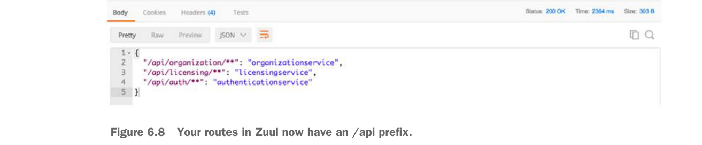

Các tuyến của bạn trong Zuul giờ có tiền tố /api.
Sau khi hoàn tất cấu hình này và dịch vụ Zuul được tải lại, bạn sẽ thấy hai mục sau khi gọi endpoint /route: /api/organization và /api/licensing. Hình 6.8 minh họa các mục này.
Giờ hãy xem cách bạn có thể dùng Zuul để ánh xạ tới các URL tĩnh. URL tĩnh là các URL trỏ tới dịch vụ không được đăng ký với công cụ khám phá dịch vụ Eureka.
6.3.3 Ánh xạ tuyến thủ công bằng URL tĩnh
Zuul có thể được dùng để định tuyến các dịch vụ không được quản lý bởi Eureka. Trong những trường hợp này, Zuul có thể được cấu hình để định tuyến trực tiếp tới một URL được định nghĩa tĩnh. Ví dụ, hãy tưởng tượng dịch vụ licensing của bạn được viết bằng Python và bạn vẫn muốn proxy nó qua Zuul. Bạn sẽ dùng cấu hình Zuul trong listing sau để thực hiện điều này.
Ánh xạ dịch vụ licensing tới một tuyến tĩnh
Tên khóa Zuul sẽ dùng để nhận diện dịch vụ nội bộ
Tuyến tĩnh cho dịch vụ licensing của bạn
zuul:
routes:
licensestatic:
path: /licensestatic/**
url: http://licenseservice-static:8081Bạn đã thiết lập một instance tĩnh của dịch vụ license sẽ được gọi trực tiếp, không qua Eureka bởi Zuul.